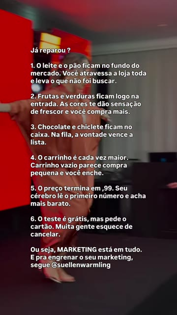
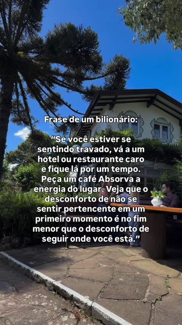
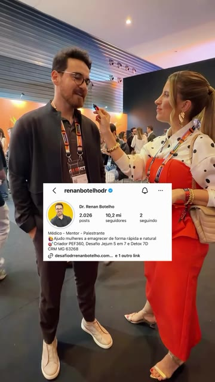

Suellen WarmlingGuia prático · Vídeos Opus
Skill para o Claude
Edite seus vídeos
com o Claude
Checklist de instalação e passo a passo: cortes, legendas, edição viral, 5 estilos de edição e vídeos animados.
Instala uma vezSem programas extrasSem custo por vídeo
Antes de tudo
O que essa skill faz
Você grava no celular. O Claude edita no seu computador.
Uma skill é um "manual de habilidade" que você instala no Claude. Com a skill Vídeos Opus, você pede em português, do seu jeito, e o Claude edita o vídeo: corta as pausas, coloca legenda, deixa no formato certo e entrega pronto numa pasta da sua Área de Trabalho.
Cortes e legenda
Tira os silêncios e as pausas e coloca legenda palavra por palavra, em Bebas Neue ou outras fontes, na cor que você quiser.
Edição viral
Abertura premium com o título em serifa, zoom lento nas frases fortes, botão de chamada e trilha ambiente. Antes, o Claude analisa seu gancho.
5 estilos completos
Celular, editorial, explicativo, colagem e anúncio, com prints, títulos e cortes de câmera.
Vídeos animados
Vídeo de oferta, lançamento ou logo animada, sem precisar gravar nada, nas cores da sua marca.
Formatos
Reels e Stories, feed 4:5, quadrado, horizontal, e versão leve para mandar no WhatsApp.
No seu computador
Tudo roda na sua máquina. Seu vídeo não vai para nenhum site de edição e não há cobrança por vídeo.
Onde funciona
| Onde você usa o Claude | Funciona? | Por quê |
|---|
| App do Claude no computador, aba Code, ambiente Local | SIM | É aqui que a skill roda: ela usa os programas que vêm dentro dela, no seu computador. |
| Aba Code com ambiente Cloud (nuvem) | NÃO | Roda num computador da Anthropic, que não vê seus vídeos nem suas pastas e é apagado no fim. |
| Claude Code no terminal | SIM | O mesmo Claude Code, numa janela de texto. |
| Chat normal do Claude (site ou app) | NÃO | O chat não tem acesso aos programas de vídeo do seu computador. |
| Claude no celular | NÃO | A edição precisa do computador. |
| Codex (app do ChatGPT no computador) | SIM | Com o instalador próprio (páginas 5 e 6). |
| Mac | AINDA NÃO | Esta versão é para Windows 10 e 11. |
Resumo: você precisa do app do Claude no computador com Windows e de um plano pago (Pro ou acima), porque a aba Code não existe no plano gratuito.
Vídeos Opus · Guia2
Usa o Claude no navegador?
Baixe o app do Claude
Uma vez só. É a mesma conta que você já usa.
No navegador, o Claude roda nos computadores da Anthropic e não enxerga os vídeos do seu computador. Para editar, ele precisa trabalhar na sua máquina, e isso só acontece pelo app do Claude. Você continua usando o navegador para todo o resto; o app é só para editar vídeo.
2
Clique no botão preto Download for Windows (o destacado na imagem acima).
3
Abra o arquivo que baixou (ele fica na pasta Downloads). O Claude se instala sozinho e abre.
4
Entre com a mesma conta do navegador: o mesmo e-mail, ou "Continuar com Google" se é assim que você entra.
5
Pronto: no topo do app aparece a aba Code. Siga para a instalação da skill, na próxima página.
Não apareceu a aba Code? Ela só existe nos planos pagos (Pro ou acima). Confira o seu plano em claude.ai, em Configurações.
Vídeos Opus · Guia3
Checklist
Antes de instalar
- Computador com Windows 10 ou 11
- Uns 3 GB livres no disco
- App do Claude instalado no computador, com login feito (veja a página anterior)
- Plano Pro, Max, Team ou Enterprise (a aba Code aparece no topo do app)
- Internet para baixar o pacote (uns 390 MB, uma vez só)
Passo a passo
Instalação
Baixe, dê dois cliques, pronto.
1
Clique no botão para baixar o instalador:
Baixar o instaladorSe o navegador perguntar se você quer manter o arquivo, clique em Manter.2
Abra a pasta Downloads e dê dois cliques no arquivo Instalar-Videos-Opus.
3
Se aparecer a tela azul "O Windows protegeu o computador", clique em Mais informações e depois em Executar assim mesmo.
4
Abre uma janela preta que baixa e instala tudo sozinha, em 1 a 3 minutos. Quando aparecer PRONTO!, aperte qualquer tecla. Está instalado.
“
Depois de instalar, não precisa adicionar, ativar nem configurar nada. É só abrir o app do Claude, aba Code, e pedir o vídeo do seu jeito. Ele já sabe editar.
É seguro? O instalador é um arquivo de texto aberto, no GitHub oficial do projeto. Ele baixa o pacote, coloca a skill na pasta do Claude e testa. Não pede senha e não mexe nos seus arquivos. Para atualizar no futuro, é só baixar e abrir de novo.
Usa o ChatGPT em vez do Claude? A instalação está na próxima página.
O uso vale por 7 dias a partir do primeiro vídeo. Depois, essa skill fica disponível para quem se tornar aluna da Super Black Eterna (28/10).
Vídeos Opus · Guia4
Prefere o ChatGPT?
Baixe o app do ChatGPT
Uma vez só. É a mesma conta que você já usa.
A skill também funciona no Codex, a parte do ChatGPT que faz tarefas no seu computador. Como no Claude, só funciona no app instalado no computador: o ChatGPT no navegador ou no celular não enxerga os vídeos do seu computador.
2
Confira se é o ChatGPT da OpenAI (sem "Beta" e sem "Classic") e clique no botão azul Instalar (o destacado na imagem acima). Se o navegador perguntar, clique em Abrir Microsoft Store.
3
Quando terminar, abra o ChatGPT pelo menu Iniciar.
4
Entre com a mesma conta do ChatGPT: o mesmo e-mail, ou "Continuar com o Google" se é assim que você entra.
5
Na barra lateral, troque de ChatGPT para Codex. Pronto: siga para a instalação da skill, na próxima página.
Não aparece o Codex? Atualize o app pela Microsoft Store e confira seu plano em chatgpt.com, em Configurações. Nos planos pagos (Plus ou acima) o limite de uso é maior: para editar vídeos com frequência, prefira um deles.
Vídeos Opus · Guia5
Passo a passo no ChatGPT
Instalar no ChatGPT
Baixe, dê dois cliques, pronto.
O instalador do ChatGPT é outro arquivo: não mexe na instalação do Claude, e você pode ter as duas.
1
Clique no botão para baixar o instalador do Codex:
Baixar o instalador do CodexSe o navegador perguntar se você quer manter o arquivo, clique em Manter.2
Abra a pasta Downloads e dê dois cliques no arquivo Instalar-Videos-Opus-Codex.
3
Se aparecer a tela azul "O Windows protegeu o computador", clique em Mais informações e depois em Executar assim mesmo.
4
Abre uma janela preta que baixa e instala tudo sozinha. Quando aparecer PRONTO!, aperte qualquer tecla. Está instalado.
Como usar no Codex
1
Feche e abra de novo o app do ChatGPT (só na primeira vez, para ele achar a skill) e escolha Codex na barra lateral.
2
Clique em Novo chat. Se ele pedir uma pasta, clique em Abrir pasta e escolha Downloads. Se aparecer a opção, deixe em Local (não em Nuvem).
3
Peça do seu jeito, como no Claude: "corta as pausas e põe legenda no meu último vídeo". Se o Codex pedir para executar um comando, clique em Permitir sempre.
4
O vídeo pronto aparece na pasta Vídeos editados, na sua Área de Trabalho.
“
Os pedidos deste guia valem igual no Codex. Onde está escrito "Claude", leia "Codex".
| Aconteceu | O que fazer |
|---|
| O Codex diz que não conhece a skill | Feche e abra o app. Em Habilidades, confira se videos-opus está em "Minhas habilidades". Se não estiver, abra o instalador do Codex de novo. |
| ChatGPT no site ou no celular | Não funciona: só o app do ChatGPT no computador com Windows usa a skill. |
O período de uso de 7 dias é o mesmo no Claude e no Codex.
Vídeos Opus · Guia6
Toda vez que gravar
Como usar
Grave, passe para o computador e peça.
1
Grave em pé (vertical), perto do celular, num lugar silencioso. Deixe um espaço acima da cabeça: é ali que entram títulos e prints.
2
Passe o vídeo para o computador. O jeito mais fácil é mandar para você mesma no WhatsApp e baixar pelo WhatsApp Web: ele cai em Downloads. Google Drive e cabo USB também funcionam.
3
Abra o app do Claude, aba Code, ambiente Local, e peça do seu jeito. Não precisa adicionar nem ativar nada: a skill já está lá. Você não precisa saber onde o vídeo está: o Claude procura em Downloads, Área de Trabalho, Vídeos e Imagens e pergunta se achou o certo.
4
O vídeo pronto aparece na pasta Vídeos editados, na sua Área de Trabalho. O original continua onde estava.
Quanto tempo leva
| Pedido | Tempo (vídeo de 30 s) |
|---|
| Cortes + legenda | uns 2 minutos |
| Edição viral | uns 3 minutos |
| Estilos celular, editorial, explicativo e anúncio | 5 a 15 minutos (o Claude monta cada elemento) |
| Estilo colagem | o mais demorado: mais uns 6 minutos por minuto de vídeo, para recortar você do fundo |
| Vídeo animado de 15 s | 5 a 10 minutos |
“
Não precisa decorar nenhum comando. Fale com o Claude como falaria com uma editora: o que você quer, para onde vai o vídeo e o que não pode faltar.
Super Black Eterna
28/10, quarta · cursos com acesso vitalício, o clone do cérebro da Suellen e conteúdo pronto por muitos meses. Não é uma black comum. É fartura.
Vídeos Opus · Guia7
28/10 · quarta
Super Black
Eterna
Você nunca mais vai precisar comprar cursos de marketing e vendas na vida.
- Cursos com acesso vitalício
- Clone do cérebro Suellen para sempre, como uma consultoria personalizada eterna
- Seu conteúdo pronto por muitos meses
- Seu perfil analisado
- E muito mais
Um valor surreal. Não é uma black comum. É fartura.
suellenwarmling.com.br/super-black-eterna
Vídeos Opus · Guia8
Modelos prontos
O que pedir
Copie, troque o que está entre colchetes e envie.
1 Edição básica: cortes e legenda ~2 min
Tira todas as pausas e coloca legenda palavra por palavra. É o pedido do dia a dia.
CopieCorta as pausas e põe legenda no meu último vídeo.
Com legenda do seu jeitoCorta as pausas do vídeo [IMG_2041] e põe legenda em Bebas Neue, branca, com a palavra que eu estiver falando em [amarelo]. Legenda um pouco mais para cima.
Estilos de legendaclássica (branca com sombra suave) · palavra colorida · uma palavra por vez · texto sobre faixa. FontesBebas Neue · Anton · Montserrat · Poppins.
2 Edição viral ~3 min
Abertura premium com o título em serifa e detalhes dourados, zoom lento nas frases fortes, botão de chamada e trilha ambiente. Dica: comece o vídeo com 2 ou 3 segundos sorrindo, sem falar. O Claude usa esse trecho para a abertura.
CopieFaz uma edição viral do vídeo que está nos Downloads. Na abertura, coloca o título "[Promoção | de | Aniversário]". Destaca a frase "[só até sexta]" e transforma "[clica no link]" em botão. Usa a cor [terracota].
Se não quiser escolher nadaFaz uma edição viral do meu último vídeo, escolhe você o título e as frases mais fortes e me conta o que escolheu.
3 Estilo celular 5–10 min
Parece que você editou no próprio Instagram: uma palavra de legenda por vez, prints acima da cabeça e cortes secos. Ótimo para bastidores e resultados.
CopieEdita meu último vídeo no estilo celular. Usa os prints que coloquei na pasta Meus prints quando eu falar dos resultados.
Vídeos Opus · Guia9
4 Estilo editorial 10–15 min
Cara de revista: a palavra-chave aparece em itálico elegante, frases montadas linha a linha e cards com prints. Para conteúdo de autoridade.
CopieEdita o vídeo [IMG_2041] no estilo editorial, com cara de revista. Minha cor de destaque é [#C14B22].
5 Estilo explicativo 10–15 min
Para notícia e explicação: imagens e vídeos de apoio por cima, diagramas e um mapa da edição que você aprova antes de montar.
CopieEdita meu último vídeo no estilo explicativo. Estou explicando [como funciona o novo algoritmo do Instagram]. Me mostra o mapa da edição antes de montar.
6 Estilo colagem o mais demorado
Visual de recortes: o Claude recorta você do fundo e coloca títulos atrás da sua cabeça, fotos recortadas e sons.
CopieEdita o vídeo que está nos Downloads no estilo colagem, com o título "[A BLACK QUE NÃO ACABA]" atrás da minha cabeça.
7 Anúncio para tráfego pago 10–15 min
Gancho forte, esquemas na faixa de cima da tela e chamada clara para a ação.
CopieTransforma esse vídeo num anúncio para tráfego pago da minha [mentoria de R$ 497]. O CTA é "[clica em saiba mais]".
8 Vídeo animado (sem gravar) 5–10 min
O Claude escreve a animação e grava em vídeo. Antes, ele mostra 2 ou 3 referências de um acervo de 703 vídeos virais para você escolher o estilo.
CopieCria um vídeo animado de 15 segundos para Reels anunciando [o Planner 2027 por R$ 47, só esta semana]. Usa as cores da minha marca: [terracota e areia].
Logo animadaCria uma logo animada de 5 segundos com o nome "[Ateliê Bia]" para abrir meus vídeos.
Vídeos Opus · Guia10
Antes de editar
Roteiro e referência
O Claude também ajuda no que você fala e no estilo que você quer.
9 Roteiro viral ~2 min
O Claude lê o que você falou no vídeo e analisa com o método de ganchos inspirado em Alex Hormozi: dá uma nota de 0 a 10, mostra se os 3 primeiros segundos prendem, sugere 3 ganchos mais fortes e os trechos para cortar. O gancho que você escolher vira o título da abertura.
Vídeo já gravadoAnalisa o roteiro do meu último vídeo e me sugere ganchos mais fortes antes de editar.
Antes de gravarEscreve um roteiro viral de 40 segundos sobre [como escolher o tom de base certo] para [clientes do meu salão]. No fim, quero que comentem [EU].
10 Vídeo de referência 5–15 min
Viu um vídeo com uma edição que adorou? Salve no computador (ou grave a tela do celular) e mostre ao Claude. Ele observa o gancho, o texto na tela, a legenda, o ritmo dos cortes e as cores, e cria um vídeo seu parecido no estilo, sem copiar o conteúdo de ninguém. Só o link não basta: o vídeo precisa estar no computador.
CopieSalvei nos Downloads um vídeo chamado [referencia-reels]. Edita o meu último vídeo num estilo parecido com o dele.
Com printsColoquei na pasta [Referências] uns prints de um vídeo que eu gosto. Faz a legenda e a abertura do meu vídeo nesse estilo.
Vídeos Opus · Guia11
Modelos de vídeo
Modelos de vídeo
Escolha um formato pronto e peça pelo nome.
Como usar um modelo
- Toque em Ver o vídeo de referência para conhecer o formato.
- Grave o seu vídeo e passe para o computador, como você já faz.
- Copie o pedido do modelo e envie para o Claude (ou para o Codex).
- O Claude aplica tudo do formato: as letras, os tamanhos, os espaçamentos, a posição do vídeo, o ritmo dos cortes e os elementos na tela. Você não precisa baixar o vídeo de referência.
CopieEdita meu último vídeo no modelo [nome do modelo].
Com ajusteEdita o vídeo [IMG_2041] no modelo [nome do modelo], mas com a minha cor de destaque [#C14B22].
Tela dividida
Nos primeiros segundos, a tela se divide: em cima, uma cena que dá contexto (notícia, vídeo de outra pessoa, produto); embaixo, você falando, com o título no meio. Depois, só você, sem legenda.
Ver o vídeo de referência →
CopieEdita meu último vídeo no modelo tela dividida. A cena de cima é o vídeo [noticia] que está nos Downloads.
POV
Vídeo de 6 a 8 segundos de um momento real (evento, equipe, clientes) com uma frase "POV:" fixa em cima. Sem fala: a música você escolhe no Instagram.
Ver o vídeo de referência →
CopieFaz um vídeo no modelo POV com o vídeo [do evento] e a frase: POV: [você começou a andar com quem pensa grande].
Vídeos Opus · Guia12
Modelos de vídeo
Mais modelos
Toque no link para ver o original. Peça pelo nome.

Texto na tela
Uma lista longa por cima de um vídeo curto de bastidor. É curto de propósito: a pessoa pausa, relê, salva e comenta.
Ver o vídeo de referência →
CopieFaz um vídeo no modelo texto na tela com o vídeo [do meu ateliê] e uma lista de [6 erros de quem começa a vender]. No fim: comenta [QUERO].

STA
Uma cena calma (céu, café, viagem) com uma frase forte no centro, com tempo para ler. Sem fala: a música você escolhe no Instagram.
Ver o vídeo de referência →
CopieFaz um vídeo no modelo STA com o vídeo [da cafeteria] e a frase: [“Quem se compara com o vizinho nunca enxerga o próprio caminho.”]

Entrevista
Você entrevista várias pessoas num evento. Abre com uma sequência rápida delas, um título e o print do perfil de cada uma; depois vêm as respostas, sem legenda.
Ver o vídeo de referência →
CopieEdita minhas entrevistas no modelo entrevista. Os vídeos estão nos [Downloads] e os prints dos perfis na pasta Meus prints.
Vídeos Opus · Guia13
11 Formatos e WhatsApp ~1 min
Feed quadradoDeixa esse vídeo quadrado para o feed, mostrando o vídeo inteiro com fundo desfocado.
WhatsAppDiminui o vídeo editado para eu mandar no WhatsApp.
YouTubeFaz uma versão horizontal desse vídeo para o YouTube.
Depois de pronto
Ajustes
Não gostou de algo? É só pedir.
O Claude mexe só no que você pediu, sem refazer tudo.
LegendaPõe a legenda mais para cima, ela está cobrindo minha mão.
Palavra erradaNa legenda saiu "cloud", o certo é "Claude". E meu nome é Suellen, com dois L.
Cortar um trechoTira a parte em que eu falo do preço.
Cortou demaisCortou um pedaço da minha fala no começo, deixa um pouco mais de respiro.
Outro visualGostei, mas faz outra versão no estilo editorial.
“
Dica de ouro: na primeira vez, o Claude pergunta seu nome, seu @ e os nomes que você fala muito (sua marca, seu produto). Responda com calma: é isso que deixa a legenda certa.
Quer ir além do vídeo? Super Black Eterna
28/10, quarta · cursos com acesso vitalício, o clone do cérebro da Suellen e conteúdo pronto por muitos meses. Não é uma black comum. É fartura.
Vídeos Opus · Guia14
Se algo der errado
Perguntas e problemas
| Aconteceu | O que fazer |
|---|
| A janela preta mostrou um erro | Confira a internet e o espaço no disco (uns 3 GB) e repita. Se o erro continuar, mande uma foto da janela para o suporte. |
| Não aparece a aba Code no app | A aba Code é dos planos pagos. Confira seu plano em claude.ai, em Configurações. Atualize o app do Claude. |
| O Claude disse que não conhece a skill | Confira se a janela preta mostrou PRONTO!. Abra uma conversa nova no app, aba Code, ambiente Local. Se continuar, baixe e abra o instalador de novo. |
| O Claude pede permissão toda hora | Clique em Permitir. Se o app oferecer "permitir sempre" para esse tipo de comando, pode usar. |
| "Não achei nenhum vídeo" | Confira se o vídeo terminou de baixar e está em Downloads, Área de Trabalho ou Vídeos. Ou diga o nome do arquivo. |
| A legenda errou uma palavra | Peça a correção ("na legenda, troca X por Y"). Nomes próprios: diga ao Claude, que ele guarda no seu perfil. |
| Demorou muito | Computador sem placa de vídeo é mais lento, principalmente no estilo colagem. Prefira vídeos de até 90 segundos. |
| O computador travou no corte | Baixe e abra o instalador de novo: a versão de 16/10 em diante usa bem menos memória. |
| Quero atualizar para uma versão nova | Baixe e abra o instalador de novo: vem a versão mais nova, sem apagar seus vídeos. Instalou antes de 16/10? Atualize. |
O que a skill nunca faz
- Publicar ou enviar vídeos por você
- Apagar o seu vídeo original
- Inventar print, número, depoimento ou logo
- Mandar seu vídeo para sites de edição (tudo fica no seu computador)
Última chamada: Super Black Eterna
28/10, quarta · cursos com acesso vitalício, o clone do cérebro da Suellen e conteúdo pronto por muitos meses. Não é uma black comum. É fartura.
Suporte: links.suellenwarmling.com.br/fale-com-suporte-aqui
Vídeos Opus · Guia15
28/10 · quarta
Super Black
Eterna
Você nunca mais vai precisar comprar cursos de marketing e vendas na vida.
- Cursos com acesso vitalício
- Clone do cérebro Suellen para sempre, como uma consultoria personalizada eterna
- Seu conteúdo pronto por muitos meses
- Seu perfil analisado
- E muito mais
Um valor surreal. Não é uma black comum. É fartura.
suellenwarmling.com.br/super-black-eterna
Vídeos Opus · Guia16